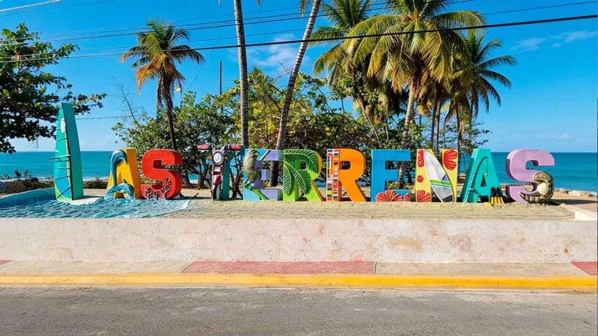

Si votre navire accoste à Taino Bay
Consacrez plutôt la journée à la côte nord : Puerto Plata, Sosúa ou les cascades de Damajagua tiennent confortablement dans une escale. Nous organisons l'une ou l'autre autour de votre heure d'embarquement.

Las Terrenas · Samaná · République dominicaine
Une ville balnéaire de la péninsule de Samaná, hors de la côte nord proprement dite et qui vaut le détour. Il y a plusieurs façons d'y arriver, et la bonne dépend d'où vous volez — nous vous dirons honnêtement laquelle. Le prix est convenu avant votre départ.
La version courte
Las Terrenas est une ville balnéaire sur la face nord de la péninsule de Samaná, dans la province de Samaná — un lieu aux accents français et italiens, fait de restaurants de plage, de longues baies de sable et de collines boisées en arrière-plan. La plupart des visiteurs arrivent par Puerto Plata (POP) ou Saint-Domingue (SDQ) et poursuivent par la route. SG Caribbean Transfers & Tours assure des transferts privés porte-à-porte de POP vers Las Terrenas à un tarif fixe de 178,50 $US pour 1 à 6 personnes, sans prépaiement : vous payez votre chauffeur à l'arrivée, en espèces ou par PayPal, Cash App ou Zelle.
Arrivée en avion
Las Terrenas se trouve sur sa propre péninsule : le choix de l'aéroport y pèse plus lourd que partout ailleurs sur cette côte. Puerto Plata (POP) est celui dont nous publions un tarif fixe ; Saint-Domingue (SDQ) et les autres sont chiffrés sur demande. Dites-nous d'où vous volez et nous vous dirons lequel a réellement du sens.
| Aéroport | Code | Prix fixe |
|---|---|---|
| Puerto Plata — Gregorio Luperón Intl. | POP | US$178.50 |
| Santiago — Cibao Intl. | STI | Sur demande |
| Saint-Domingue — Las Américas Intl. | SDQ | US$219 |
| Punta Cana Intl. | PUJ | US$425 |
Ajoutez 5 $US par passager au-delà de six. Le tarif depuis Santiago est celui que nous chiffrons encore sur demande, car nous ne mettrons pas une estimation sur une page publique — tout le reste du tableau est confirmé et fixé par écrit avant le départ. Les prix sont par véhicule, pas par personne.
Un seul message WhatsApp suffit — pas de compte, pas de formulaire, pas de carte bancaire. Dites-nous combien de bagages vous accompagnent et nous envoyons le véhicule adapté. Nous répondons avec le prix confirmé par écrit.
Si vous atterrissez avec deux heures de retard, la prise en charge se décale de deux heures. Votre chauffeur attend sans frais supplémentaires — les retards sont notre problème, pas le vôtre.
Votre chauffeur vous accueille à l'intérieur avec un panneau, vous aide avec les bagages et vous conduit à votre hôtel, villa ou appartement à Las Terrenas. Demandez un arrêt supermarché ou distributeur en chemin : c'est sans supplément.
Arrivée en croisière
Las Terrenas se trouve sur une autre péninsule que les terminaux de croisière de Puerto Plata. Nous pourrions vous y conduire et vous ramener dans le cadre d'une escale, mais vous passeriez la journée dans le van et verriez la ville par la vitre. Nous préférons le dire plutôt que de le vendre.
Consacrez plutôt la journée à la côte nord : Puerto Plata, Sosúa ou les cascades de Damajagua tiennent confortablement dans une escale. Nous organisons l'une ou l'autre autour de votre heure d'embarquement.
Même réponse, et Amber Cove est encore plus à l'ouest. D'ici, Cofresí et Ocean World sont à votre porte, et Puerto Plata à un court trajet vers l'est.
Une escale typique à Puerto Plata dure de 8 à 9 heures. Si une compagnie vous vend Samaná comme excursion, c'est presque certainement parce que votre navire fait escale dans la baie de Samaná elle-même, et non à Puerto Plata — ce sont deux ports différents. Si vous accostez à Samaná et voulez Las Terrenas, écrivez-nous : c'est un trajet court et sensé, et nous l'assurons. Depuis Puerto Plata, non.
Pourquoi nous choisir
C'est l'un des transferts les plus longs que nous assurons, par une route de montagne jusqu'à une autre péninsule. C'est précisément le trajet où un prix convenu et un chauffeur qui connaît la route valent plus que l'économie.
| Ce qui compte | SG Caribbean | Taxi de l'aéroport | Navette partagée | Voiture de location |
|---|---|---|---|---|
| Prix | Fixe et confirmé par écrit avant le voyage | Négocié sur le trottoir, souvent plus cher la nuit | Bon marché par siège, mais généralement par personne | Tarif journalier plus assurance, carburant et stationnement |
| Si le vol a du retard | Nous suivons le numéro de vol et décalons la prise en charge — sans supplément | Celui qui reste sur la file à cette heure-là | La navette part généralement sans vous | Le comptoir peut déjà être fermé |
| Qui est dans le véhicule | Uniquement votre groupe, dans un van privé climatisé | Uniquement votre groupe | Toute autre personne ayant réservé ce trajet | Vous, au volant |
| Bagages et sacs supplémentaires | Dites-nous combien et nous envoyons un véhicule adapté — sans supplément | Dépend entièrement de la voiture qui se présente | Souvent refusés ou facturés comme siège supplémentaire | Seulement si vous avez réservé la bonne taille de voiture |
| Paiement | Espèces, PayPal, Cash App ou Zelle à l'arrivée — rien à l'avance | Espèces, tarif convenu sur place | Généralement prépayé en ligne | Carte, plus une caution bloquée |
| Sièges enfant | Gratuits — donnez-nous les âges et ils sont installés avant la prise en charge | Rarement disponibles | Rarement disponibles | Une option payante |
Autre chose qui ne tient pas dans un tableau : nous vivons ici. Saul, Sariel, Luis et Leuris parcourent cette côte tous les jours, parlent anglais et espagnol, et vous diront honnêtement quelle plage mérite votre après-midi.
Une fois sur place
Las Terrenas est une véritable ville balnéaire à l'accent français et italien, étirée le long du sable plutôt que bâtie autour d'un centre. Voici les endroits où nos clients nous demandent réellement de les emmener.
La plage juste à l'ouest de la ville : une courbe de sable clair avec de petits hôtels et restaurants en retrait sous les palmiers. Assez calme pour nager, assez grande pour marcher, et les couchers de soleil expliquent pourquoi les gens réservent une deuxième semaine.
La grande, encore plus à l'ouest : une immense étendue de sable bordée de cocotiers et presque aucune construction. Une poignée de restaurants de plage, et assez d'espace pour marcher jusqu'à perdre la ville de vue.
La plage de la ville, nommée d'après les îlots qui lui font face. Peu profonde, abritée et bordée par les restaurants du Pueblo de los Pescadores — l'ancien village de pêcheurs devenu l'endroit où tout le monde dîne.
Une haute cascade dans les collines entre Las Terrenas et la ville de Samaná, tombant dans un bassin où l'on peut se baigner. On y monte généralement à cheval par un sentier boueux, ce qui fait la moitié du charme.
De l'autre côté des collines, au sud : une ville portuaire sur une large baie, avec des bateaux vers Cayo Levantado. C'est la baie réputée pour les baleines à bosse, et durant les premiers mois de l'année, c'est ce qui amène beaucoup de monde sur cette péninsule.
Une petite île de la baie de Samaná, accessible en bateau depuis la ville de Samaná, avec une plage publique à un bout et un hôtel à l'autre. La sortie en bateau classique depuis ce côté de la péninsule.
Sur la côte nord de la péninsule de Samaná, dans la province de Samaná, au nord-est de la République dominicaine. Elle fait face à l'Atlantique, avec Playa Bonita et Playa Cosón s'étirant vers l'ouest et les collines de la péninsule — et la cascade El Limón — en arrière. La ville de Samaná et sa baie se trouvent de l'autre côté, au sud.
178.50 $US aller simple, par véhicule, pour 1 à 6 personnes. Chaque passager au-delà de six ajoute 5 $US. Ce prix est fixe et confirmé par écrit avant le voyage — sans majoration, sans tarif de nuit et sans supplément bagages.
Par Puerto Plata (POP) ou Saint-Domingue (SDQ). Ce sont les deux qui fonctionnent en pratique, et c'est depuis Puerto Plata que nous publions un tarif fixe : 178,50 $US l'aller pour 1 à 6 personnes. Envoyez-nous les détails de votre vol et nous vous dirons lequel des deux convient le mieux à votre heure d'arrivée.
Oui. Saint-Domingue est une porte d'entrée courante pour cette péninsule et nous l'assurons régulièrement ; Punta Cana est plus long. Nous chiffrons les deux sur demande plutôt que d'afficher un montant, car nous ne publions que des prix confirmés. Demandez sur WhatsApp et vous recevez un montant fixe, et une durée honnête, le jour même.
Nous dirions non, et nous préférons le dire maintenant. Las Terrenas est sur une autre péninsule qu'Amber Cove et Taino Bay ; dans une escale normale, vous passeriez la journée sur la route. Si votre navire fait escale dans la baie de Samaná elle-même — un port totalement différent — alors Las Terrenas est proche et nous vous y emmenons volontiers. Écrivez-nous avec le nom du port et nous vous répondrons franchement.
Non. Il n'y a ni Uber ni Lyft à Las Terrenas, ni sur cette portion de la côte. Vos options réalistes sont un transfert privé réservé à l'avance, un taxi local négocié sur place, ou un motoconcho pour les courts trajets en ville.
Ils se trouvent sur les faces opposées de la même péninsule. Las Terrenas donne sur l'Atlantique au nord : plages, restaurants de plage, une touche d'expatriés européens. La ville de Samaná occupe la baie abritée au sud : un port de travail, des bateaux vers Cayo Levantado, et le point de départ vers la baie. Les gens réservent souvent l'un en pensant à l'autre : donnez-nous le nom du logement.
Non. Rien n'est payé à l'avance et aucune coordonnée bancaire n'est demandée. Vous payez votre chauffeur à l'arrivée, en espèces (dollars US ou pesos dominicains) ou par PayPal, Cash App ou Zelle. La réservation est confirmée par message, pas par un paiement.
Oui — nous fonctionnons 24 heures sur 24, tous les jours de l'année. Les vols vers Puerto Plata arrivent et partent à des heures peu commodes, et un départ avant l'aube vers l'aéroport est une matinée ordinaire pour nous. Envoyez l'heure du vol et un chauffeur sera devant chez vous.
Envoyez-nous votre numéro de vol, votre date d'arrivée et le nombre de voyageurs. Vous recevez un prix fixe par écrit et un chauffeur qui vous attend aux arrivées, votre nom sur un panneau.